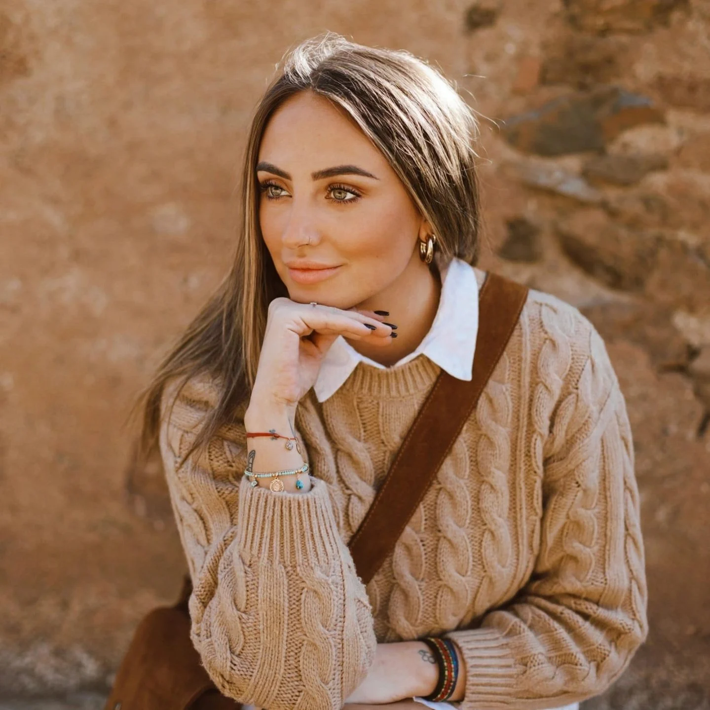
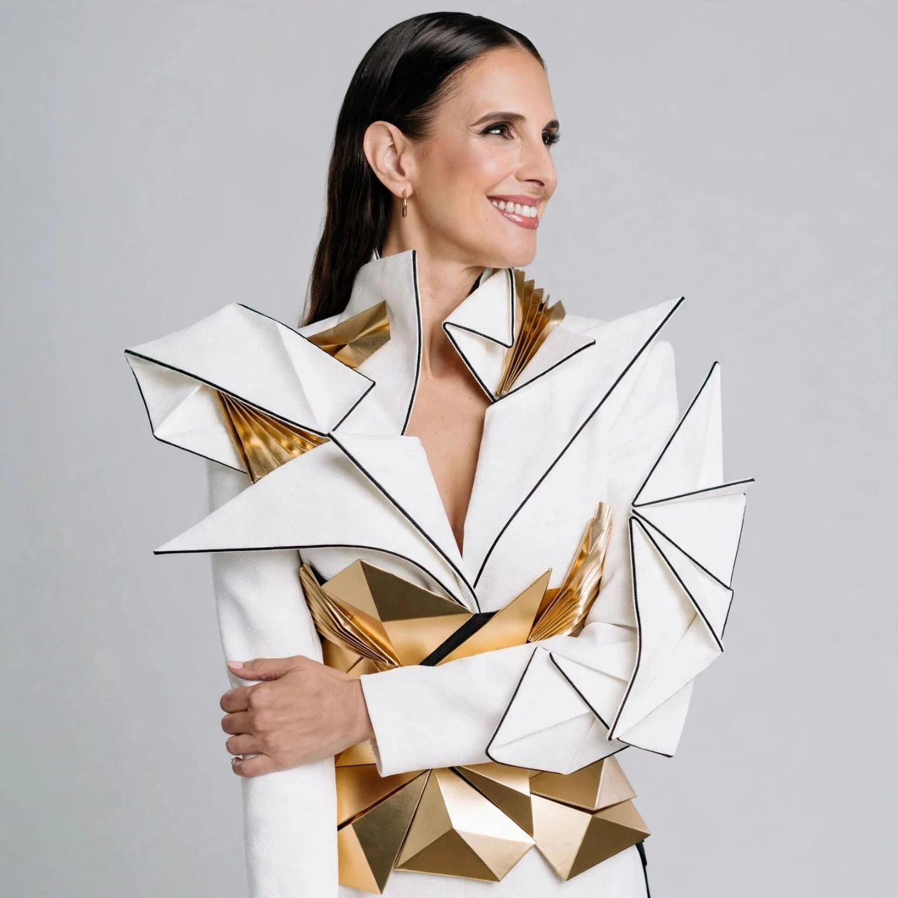
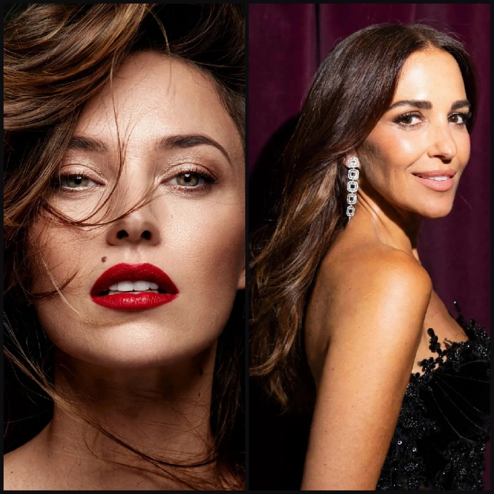
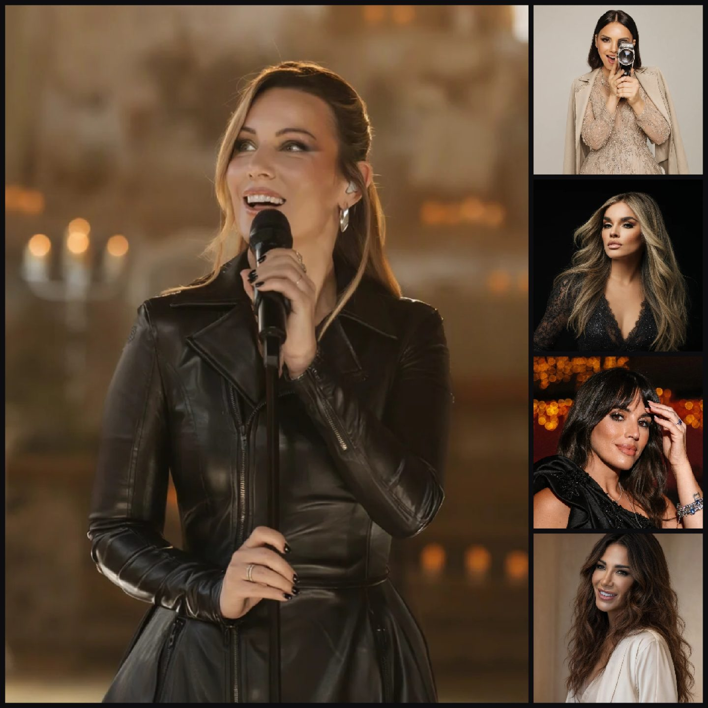
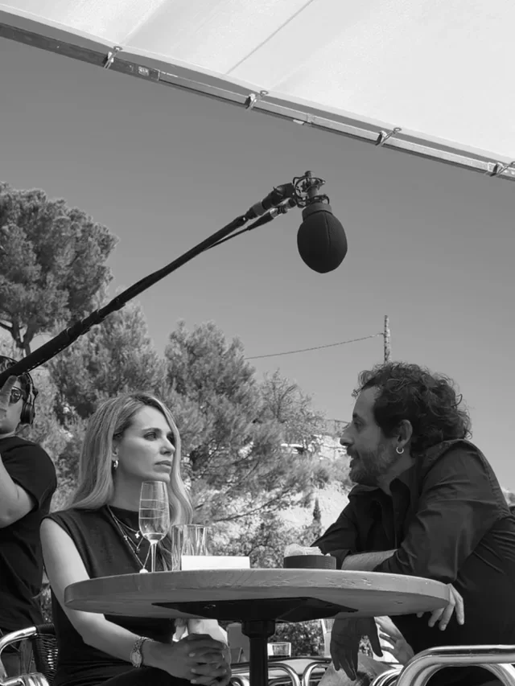
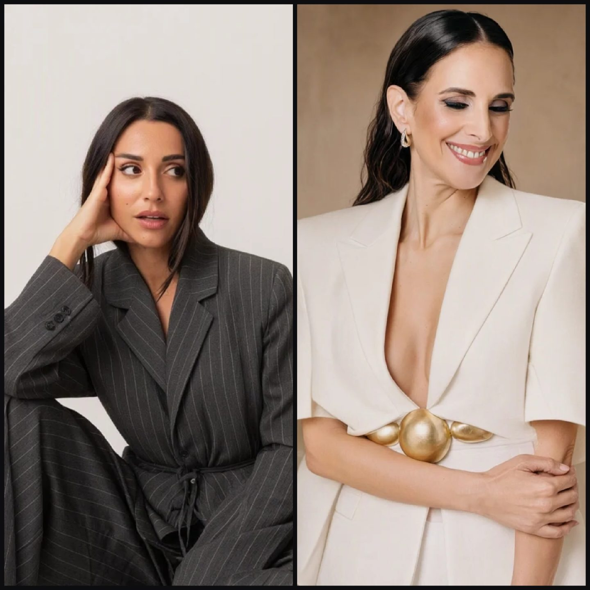
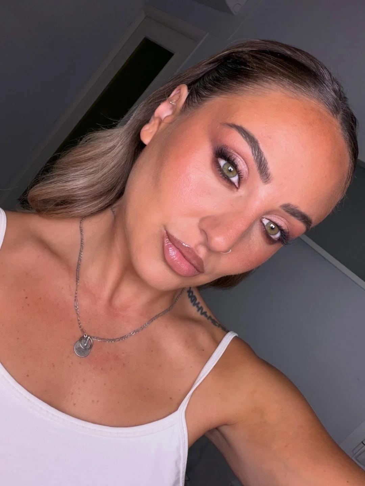
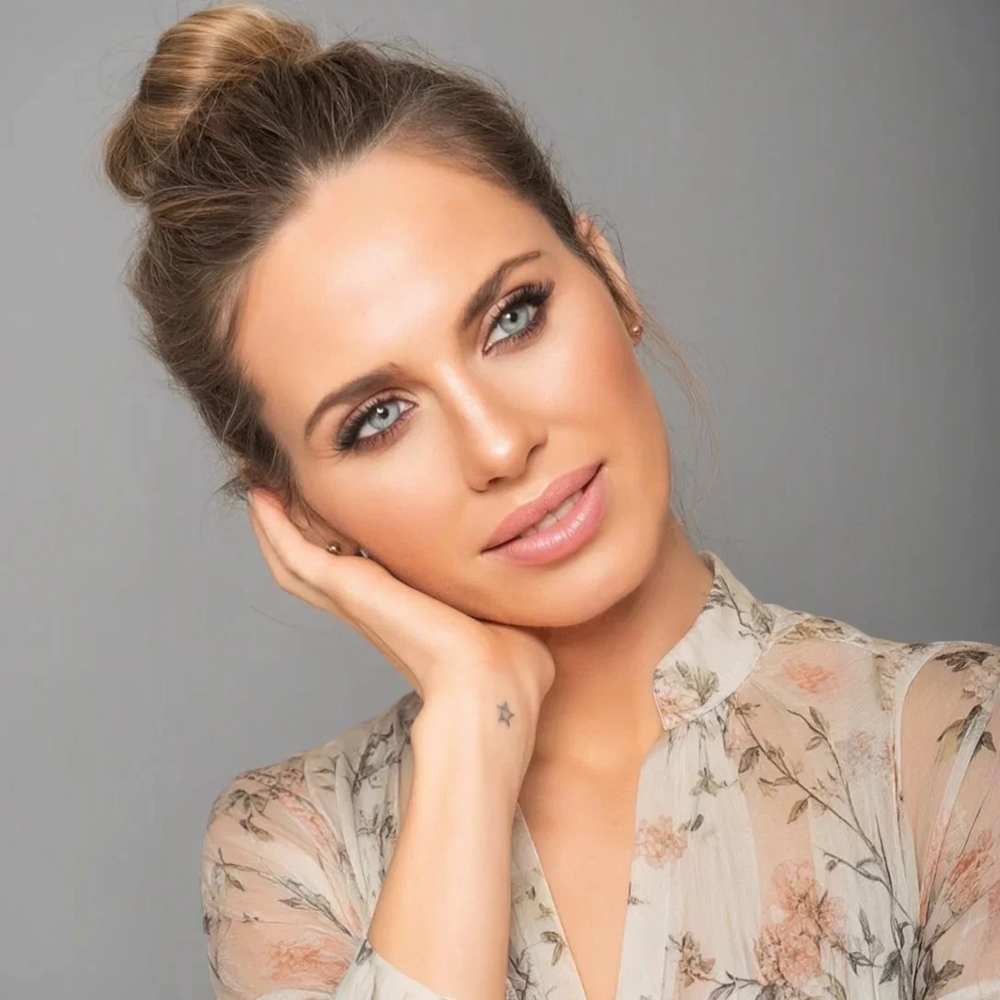

MANUELDIEGO
MODELO
MODA
CREADOR DE CONTENIDO
01
UN ESTUDIO
DEL ESTILO
Manuel Diego es modelo, entusiasta de la moda y creador de contenido. Su portafolio explora la imagen de moda, el estilo personal y la colaboración creativa.
Cada encuadre busca la contención. La silueta, la postura y la presencia mandan. Las fotografías marcan el tono y la página les da espacio para sostenerlo.
02
SELECCIÓN
EDITORIAL
Una selección de fotografías, compuesta a distintas escalas y con amplio espacio negativo.




03
LA MODA ES
UNA ACTITUD.
04
MI
ESTILO
Ropa, postura y carácter. Dos fotografías a escalas contrastadas.


05
COLABORACIONES
CREATIVAS
Moda, estilo de vida y proyectos visuales para marcas que buscan comunicar su identidad de una forma auténtica y creativa.

01
MODA
Editoriales, fotografía de moda y propuestas creativas.
02
CAMPAÑAS
Contenido visual para marcas de moda y estilo de vida.
03
COLABORACIONES CON MARCAS
Proyectos creativos y contenido promocional.
06
SOBRE
MANUEL
Modelo y personalidad de la moda con presencia contemporánea ante la cámara.
Manuel trabaja con la imagen de moda y el estilo personal, y da la bienvenida a colaboraciones de promoción con marcas afines. El portafolio muestra su identidad visual de forma directa.
LA IMAGEN CUENTA UNA HISTORIA.
MANUEL DIEGO